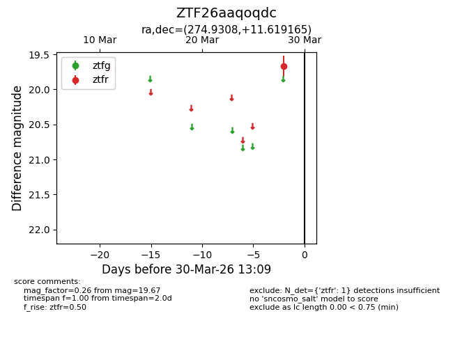
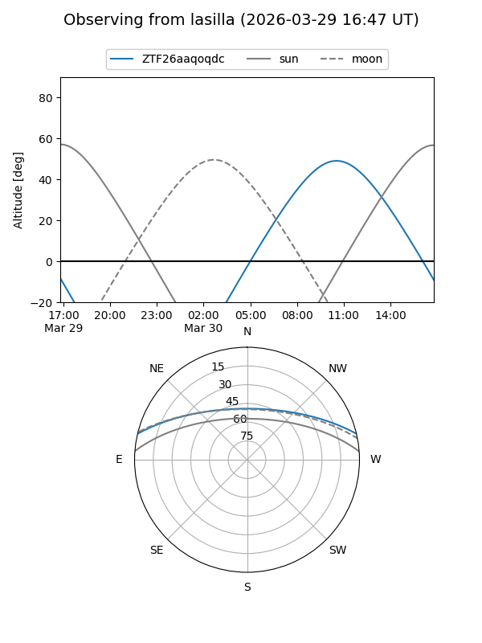
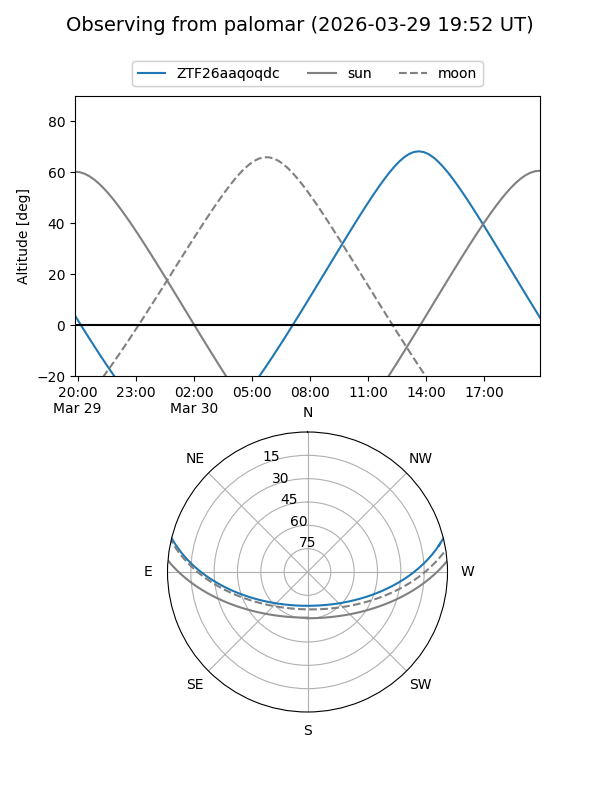

ZTF26aaqoqdc
Target ZTF26aaqoqdc at 2026-03-30 13:12
Aliases and brokers:
FINK: link
Lasair: link
ALeRCE: link
alt names
ZTF26aaqoqdc (ztf,fink_ztf)
Coordinates:
equatorial (ra, dec) = 274.9308,+11.61917
equatorial (HMS+DMS) = 18:19:43.38,+11:37:08.99
galactic (l, b) = (39.8458,+12.24473)
Flags:
Photometry:
last ztfr=19.67
1 ztfr detections
Lightcurve

Visibility


Additional plots